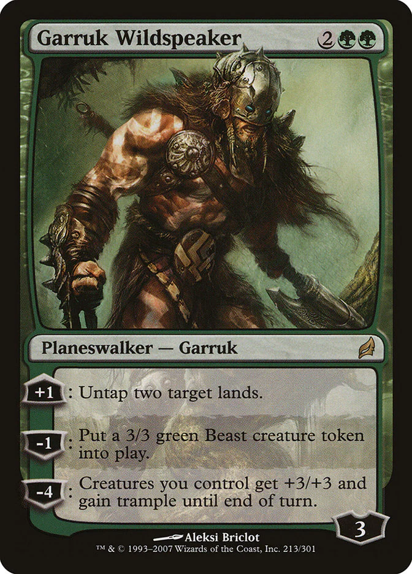
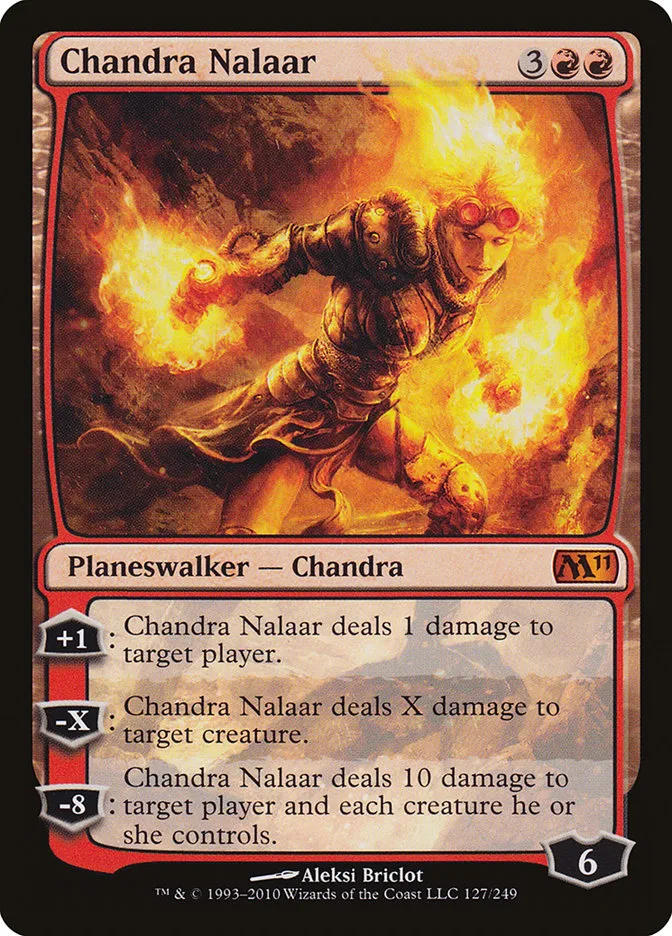

The defining trait of planeswalkers is the ability to travel between separate universes with ease, while the vast majority of people throughout the multiverse are not even aware that other worlds exist besides their own.
A planeswalker is specifically a being who possesses a planeswalker's spark (a latent power inborn into a very small number of sentient creatures). One in several million beings is born with a planeswalker spark, and having it ignite is exceedingly rare.
The Magic books provide readers and players with greater insight and perspective on characters that represent a certain color or color combination at a personal level. When pulled apart from their kin, individuals can be shown to have traits in common with their color or guild, yet toned down to a smaller, more "realistic" scale. However, there are some guidelines and some rules for determining the identity of a character. First, there are five flexible traits, visible in characters of all colors but primarily represented in one color:
 |
 |
 |
 |
|
|---|---|---|---|---|
| Self-concern | Instinct | Emotion | Curiosity | Organization |
|  |  |
You can mark which color you found most interesting here